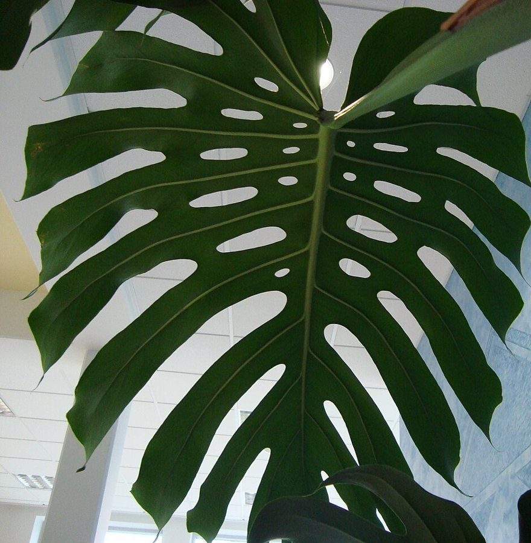

No.1
大きな葉の下で、ひと休み。そんな場所を想像して書きました。

To: EDEN TO CAFE 様
制作側の連想
店名の由来は分かりません。制作側は「EDEN TO CAFE」の「TO」を、手紙の宛名の「To:」のように読んでみました。そこでこのサイトは、遠くの楽園から届いた絵葉書(エデン宛て、カフェ行き)という見立てで作っています。お店の理念・由来とは無関係の、制作側の連想です。
届いた絵葉書(想像)
写真はお店や飯塚市のものではありません。国外・撮影地不明のフリー素材です。葉書の文面は制作側の想像で、お店の実際とは関係ありません。
No.1
大きな葉の下で、ひと休み。そんな場所を想像して書きました。

To: EDEN TO CAFE 様
No.2
窓辺に白いポットと小さな花。穏やかな午後を思い浮かべています。

To: EDEN TO CAFE 様
No.3
青緑のカップをひとつ。朝のはじまりに似合いそうです。

To: EDEN TO CAFE 様
No.4
遠くの空から。いつか実際のお店の写真に差し替わるのを楽しみに。

To: EDEN TO CAFE 様
ご案内
| 所在地 | 〒820-0079 福岡県飯塚市高田1679-2 |
|---|---|
| 電話 | なし |
| 営業時間 | 準備中 |
| 定休日 | 準備中 |
| ご予約 | 準備中 |
| 駐車場 | 準備中 |
| SNS | Instagram @edentocafe |